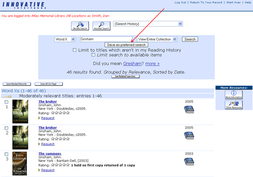

Preferred Searches
If you have a favorite author or subject for which you often search when using the catalog, you can save the search with the click of a button. This will prevent you from having to key in the search each time and let you place reserves on new materials quicker. | |
|
How to:
1.Log in to your My Millennium Account.
2.Click on the "Search Catalog" button.
3.Search for your favorite author, subject, title, etc. or create an advanced keyword search including limits to material type, language, publication year, etc..
4.When your results are displayed, click the button marked "Save as preferred search".
5.The next time that you log in to your My Millennium Account, you can click the "Preferred Searches" button to see a list of your saved searches.
6.Click on the search link associated with any of the preferred search terms in the list to quickly execute your search.
7.You can be alerted of new materials added to the library collection which match your searches. Just check the "Mark for Email" box and be sure that your patron record information includes your current email address.
|
 |